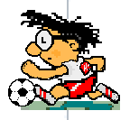

Sixth International
Protégé Workshop |
 | |
Manchester, England |
| Welcome Dinner: | For those arriving early, there will be an optional, pay-your-own-way dinner at Shere Khan in Rusholme on Sunday, 6 July, at 7:00 p.m. |
| Conference Dinner: | On Tuesday, 8 July, there will a conference dinner at the Yang Sing restaurant. For those who have indicated they will be attending, there will be a £30 fee for this meal. |
| Daily Conference Lunches/Beverages: | There is a charge of £40 fee for the conference. This fee will cover lunches for all 3 days of the conference as well as coffee/tea/beverages served during conference hours. Please note that this fee does not cover the cost of either of the 2 dinners listed above. |
| Fee(s) Payment: | You will be able to pay for the Workshop (40 GBP) and the Tuesday Workshop dinner (30 GBP) by credit card, cash, or check (GBP only) at registration. Credit card payment is preferred. If you are going to pay by credit card, then please print out the payment form after browsing to:
and fill it out before you get to registration. This will help speed registration along. |
For other meal & libation ideas/options, browse to: http://www.manchester2002-uk.com/eating&drinking.html
Last Updated: 07/3/03 by webmaster@smi.stanford.edu
Copyright © 2003 Stanford Medical Informatics. All rights reserved.